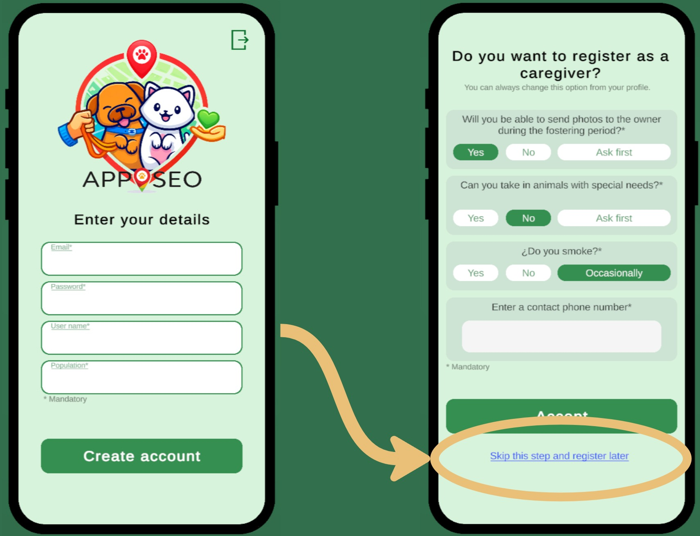
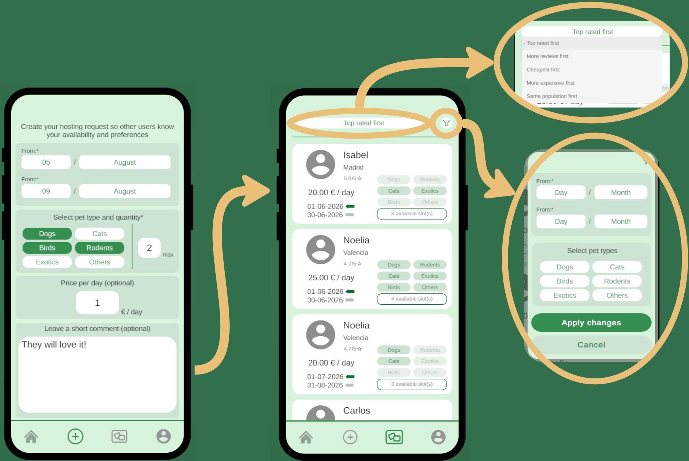
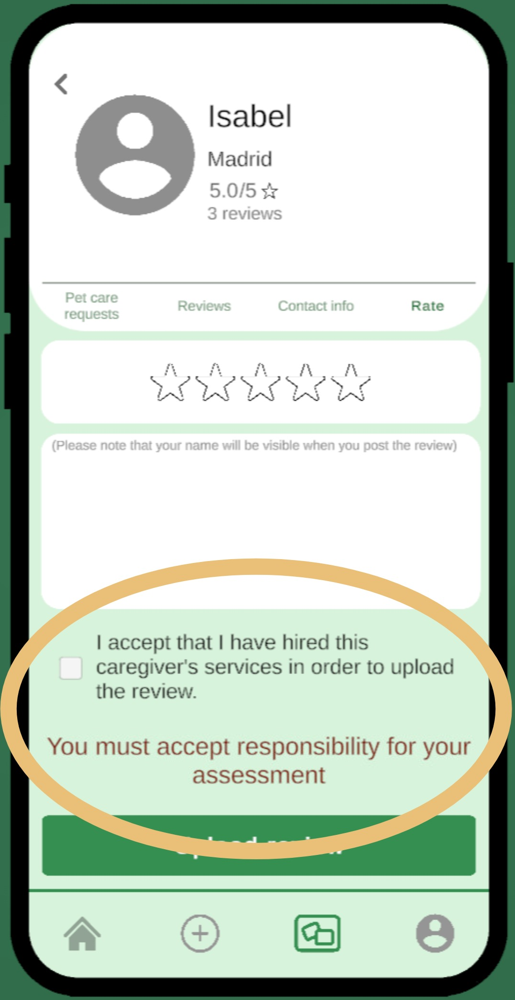
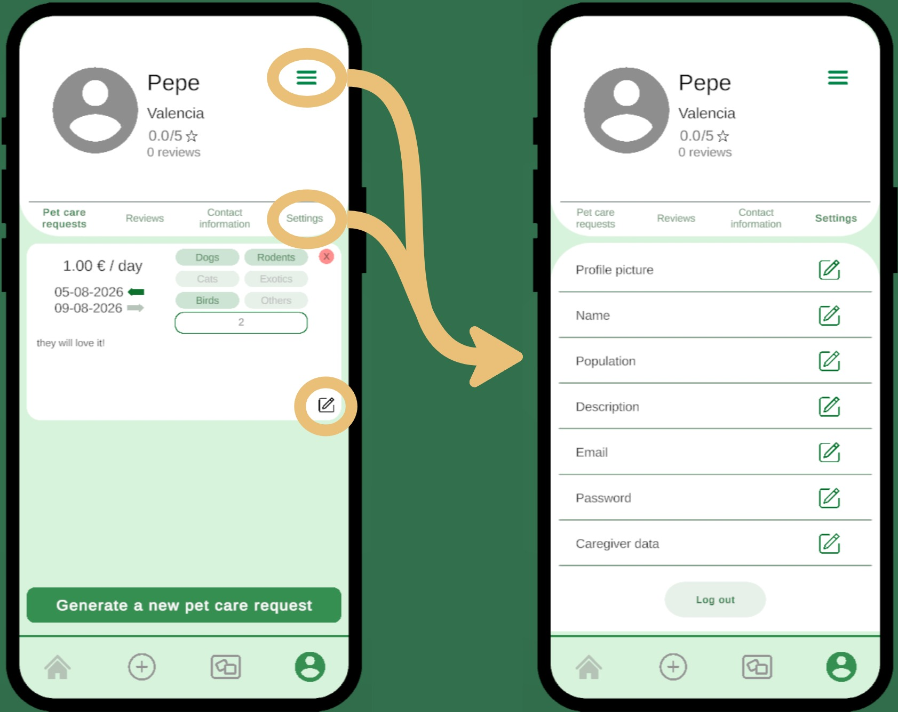
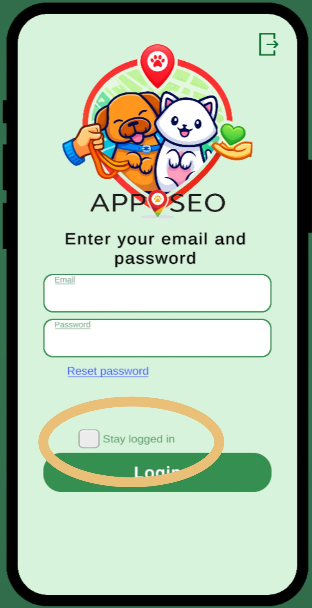
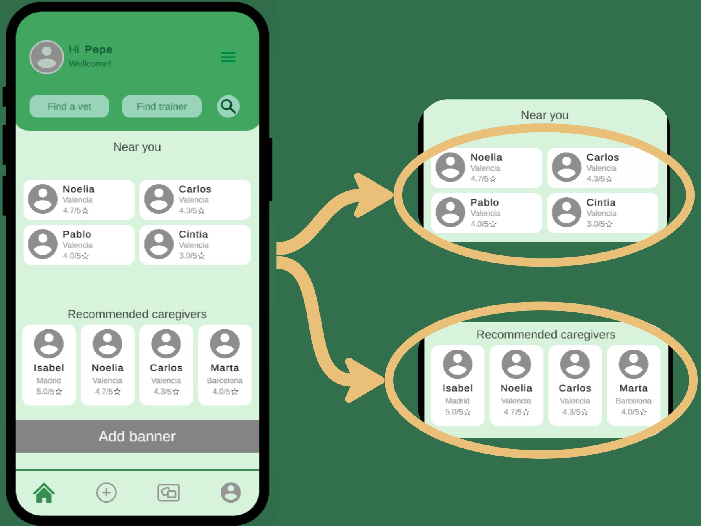

APPASEO
2024–2025
Sobre el proyecto
Unity
C#
Node.js
Express
MySQL
Prefabs
Características
Registro en 2 pasos

Peticiones de acogida

Sistema de valoraciones

Gestión de perfil

Sesión persistente

Cuidadores cercanos
